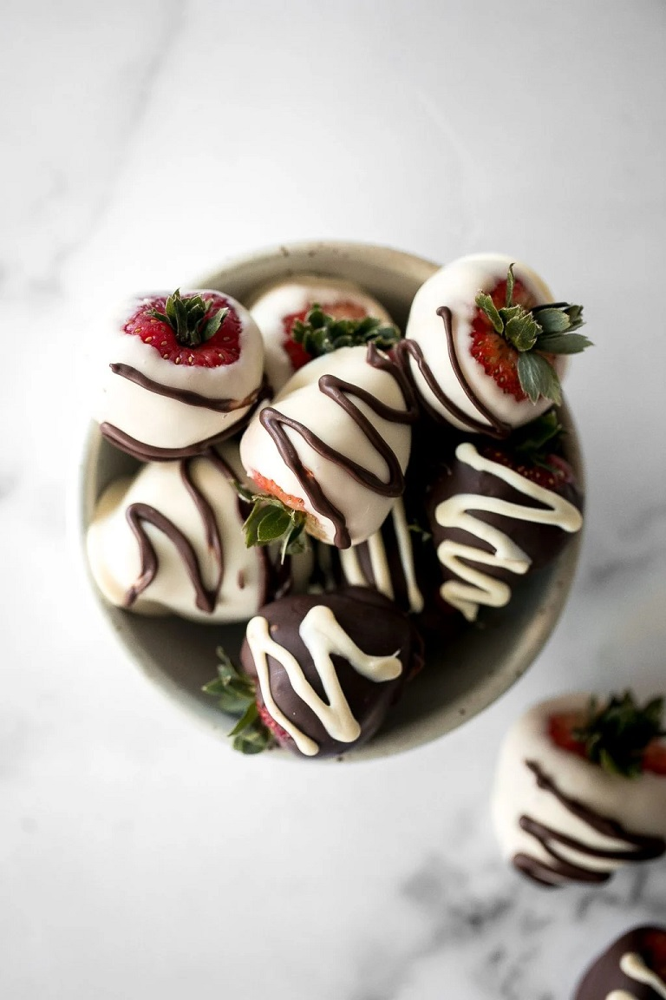

How to Make the Best Chocolate Covered Strawberries
Why pay top dollar for chocolate-covered strawberries when you can easily make them at home -- super fresh and at
a fraction of the cost? Our chocolate covered strawberries are prepared using the finest ingredients. We start
by selecting fresh, plump strawberries and then hand-dip them in real, gourmet chocolate. These perfect
chocolate dipped strawberries come in a wide variety of flavors and fun gift bundles.
INGREDIENTS
- 12 strawberries (275 grams), washed and dried
- 4.5 oz. semi-sweet chocolate (¾ cup), melted
- 4.5 oz. white chocolate (¾ cup), melted
- food colouring (optional)
STEPS
- Wash and dry the strawberries very well. The strawberries have to be really dry or else the chocolate will
not stick on. They have to be SUPER dry.
- Melt the chocolate either on the stove or in the microwave:
On the stove: Bring 2 inches of water to a low simmer in a saucepan over medium-low heat. Then turn
the heat
to low and place a large heatproof bowl of chocolate chips on the mouth of the pot. Make sure that there is
a gap of a few inches in between the bottom of the bowl and the water (You can also place a bowl on a
steamer attachment on top of your pot). Stir the chocolate constantly as it melts. Stir until the chocolate
is completely smooth and melted. This should take a few minutes.
In the microwave: The second way to melt chocolate (and an easier way) is in the microwave. Place
the
chocolate into a microwave safe bowl and microwave in 30 second intervals. Remove the bowl at each interval
and stir well. Repeat until the chocolate has completely melted. Stir until completely smooth
- Dip half the strawberries into melted semi-sweet chocolate and place on a quarter sheet baking pan lined
with parchment paper. Dip the remaining half into melted white chocolate. (Tip: You can make the chocolate
pink for Valentine's Day by adding a drop of red gel food colouring to the white chocolate first).
- Use a piping bag and round tip to drizzle the remaining chocolate on top. You can also add sprinkles or coat
the chocolate with crushed nuts.
- Place the baking sheet in the refrigerator and chill for 30 minutes until the chocolate is set.
Return to top
Return to home page